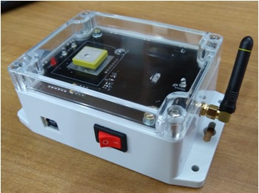
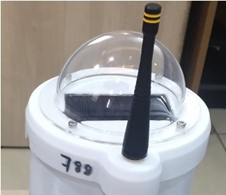
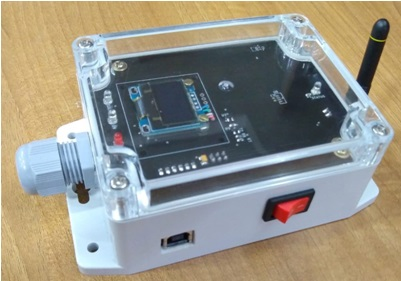

The digital journey businesses through a comprehensive and customizable digital ecosystem
The New Way to Digital Ecosystem
Accelerating, Elevating and Revolutionizing the Digital Journey of
businesses through a comprehensive and customizable digital ecosystem.
DATA SCIENCE ERVICE & SOLUTIONS
For client with common needs looking for best practice approaches to leverage data to improve business
processes. We provide pre-packaged analytic applications and services designed to support pre-defined
business processes.
IOT SERVICES & SOLUTIONS
We have a thriving future for everyone by connecting data, devices, people, processes and things to the
internet to create multifold opportunities.
TELECOM SERVICES & SOLUTIONS
We have well experienced Telecom domain experts across all technologies, who have implemented many larger networks in APJ region with many service providers.
Learn more about our process
We truly believe in the transformative power of our Solution and Services to drive the right business outcome for our customers.

Meetings, Requirements Elicitation
Talented and Experienced qualified professionals: We have over 25 years of field experience in all digital domains, Hence, you will be served by the some of the top experts in the industry.
Expert Analysis
We understand your business problem to the core and offer the right solutions and services to help you maximize your growth
Solutions & Services
We provide in-depth training, Solution, Product and Services to meet your business requirements.
25%
50%
100%
NEURALARC DEVELOPS PRODUCTS on IOT

T-Remo
T-Remo is a smart temperature monitoring solution for Vaccine/Medicine transport with GPS coordinates. All sensed parameters are sent through SMS or it can be uploaded directly to the web server
Designed for negative temperature operation
Customizable Wireless Access module
Dimension : (LxBxH) 50 x 50 x 36 mm

Data Collection Device(DCD)
DCD is a sensor node that hosts many sensors and perform the measurement of Luminous, Atmosphere Temperature and Humidity, Soil Temperature and Humidity and Soil Electrical conductivity. These measured data are sent to the Data Aggregator Device periodically over LoRa RF interface. The RF range is around 15Kms
FCC compliant
International capability
SSL, MQTT password

Data Aggregation Device(DAD) - Gateway
DAD collects sensor data from multiple Data Collection Devices(DCD) over LoRa(686 Mhz to 928 Mhz) RF interface and store it in the local SD card. Besides, sends the collected data periodically to the cloud server over SSL. The communication interface to the cloud server are Ethernet, WiFi and LTE.
FCC compliant
International capability
SSL, MQTT password
Find OUR Researches
Hypaponics
Monitoring and Controlling using Internet of Things and Machine Learning
Hypaponics is a monitoring system which takes care of an integrated vertical farming. Hypaponics contains fields like Aquaponics, Agriculture and poultry. It is monitored using various sensors and the predictions are taken based on the data using Machine Learning Algorithms. These are the advantages for the farmers to decrease their water, fertilizer usage in farm and to increase their profit hence it gives multiple ways for the income. It also gives pure organic food to eat. We can also use Solar power panels for energy. This also helps the environment tolead a healthy life free from pollution.
"food poisoning, diseases, etc. Keywords—Hypaponics; Internet of Things; Machine Learning; Monitoring; Aquaponics; Hydroponics; Aquaculture; Poultry; Organic product;
 (+91) 9626838992
(+91) 9626838992.png)
.png)